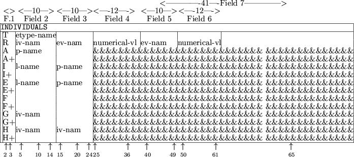
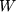
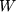
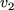
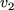
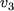
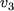
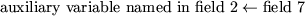
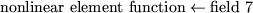
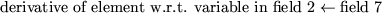

Next: 4.5 Two Further Examples
Up: 4.4 Data Cards
Previous: 4.4.2 The GLOBALS Data
4.4.3 The INDIVIDUALS Data Cards
The INDIVIDUALS
indicator card is used to announce the
definition of function and derivative
values and the transformation
between elemental
and internal variables for the types of nonlinear
element functions required.
The syntax for data cards following the
indicator card is given in Figure 4.5.
Figure 4.5:
Possible data cards for INDIVIDUALS
|  |
The one- or two-character string in field 1 specifies the type of data
contained on the card.
Possible values for the first character of the string are:
- T
- This card
announces that a new element type
is to be considered. The
string etype-name in field 2 gives the name of the element
type; the name may be up to ten characters long and must have been
defined in the ELEMENT TYPE section of the SDIF file (see
Section 3.2.15).
- R
- This card announces that information concerning the transformation
between the elemental and internal variables for the element type is
to be given. Such information is appropriate only for element types
which have been defined with internal variables in the ELEMENT
TYPE
section of the SDIF file (see Section 3.2.15). The
transformation is specified by the matrix
 of Section 2.2;
only nonzero coefficients of  need be specified here.
of Section 2.2;
only nonzero coefficients of  need be specified here.
The string inv-name in field 2 contains the name of an
internal variable (i.e., row of  ). The name must be a valid
Fortran name,
see Section 3.1.2, and have been defined on an IV
data line in the ELEMENT TYPE
section of the SDIF file. The strings iv-nam in fields 3 and
(optionally) 5 then give the names of elemental variables (i.e.,
columns of
). The name must be a valid
Fortran name,
see Section 3.1.2, and have been defined on an IV
data line in the ELEMENT TYPE
section of the SDIF file. The strings iv-nam in fields 3 and
(optionally) 5 then give the names of elemental variables (i.e.,
columns of  ). The names must be valid Fortran names and have been
defined on EV
data lines in the ELEMENT TYPE
section of the SDIF file. The strings in fields 4 and (optionally) 6
contain the numerical values of the coefficients of
). The names must be valid Fortran names and have been
defined on EV
data lines in the ELEMENT TYPE
section of the SDIF file. The strings in fields 4 and (optionally) 6
contain the numerical values of the coefficients of  corresponding
to the row given in field 2 and the columns given in fields 3 and 5
respectively. These numerical values may each be up to 12 characters
long. The entries of
corresponding
to the row given in field 2 and the columns given in fields 3 and 5
respectively. These numerical values may each be up to 12 characters
long. The entries of  may be defined in any order.
may be defined in any order.
As an example, the transformation (2.9) could be entered with
three R
data cards.
On the first, field 2 would hold the name
given to the internal variable  ; field 3 would hold the name
given to the elemental variable
; field 3 would hold the name
given to the elemental variable  and field 4 would contain 1.0.
Similarly field 5 would hold the name given to the elemental variable
 and field 6 would also contain 1.0. On the second, field 2
would also hold the name given to the internal variable
and field 4 would contain 1.0.
Similarly field 5 would hold the name given to the elemental variable
 and field 6 would also contain 1.0. On the second, field 2
would also hold the name given to the internal variable  ;
field 3 would now hold the name given to the elemental variable
;
field 3 would now hold the name given to the elemental variable  and field 4 would contain -2.0. On the third card, field 2 would hold
the name given to the internal variable
and field 4 would contain -2.0. On the third card, field 2 would hold
the name given to the internal variable  ; field 3 would hold the
name given to the elemental variable
; field 3 would hold the
name given to the elemental variable  and field 4 would contain
1.0. Field 5 would now hold the name given to the elemental variable
 and field 6 would contain -1.0.
and field 4 would contain
1.0. Field 5 would now hold the name given to the elemental variable
 and field 6 would contain -1.0.
- A
- This card
announces that an auxiliary parameter, specific to the
current element type,
is to be assigned a value. The string p-name in field 2 gives the name of the auxiliary parameter that is
to be defined; this name must be a valid Fortran name, see
Section 3.1.2, and have been previously defined in the TEMPORARIES
section. The string in field 7 is an arithmetic
expression. The assignment

is made, where again  means ``is given the value''; any
variable mentioned in the arithmetic expression must either be
reserved (see Section 4.4.1), or have been defined in the TEMPORARIES
section. If in this latter case, the variable is integer
or real, it must have been allocated a value itself either on a
previous GLOBALS
data card
or on a previous A, E or
I card for the current element type
in the ELEMENTS
section.
means ``is given the value''; any
variable mentioned in the arithmetic expression must either be
reserved (see Section 4.4.1), or have been defined in the TEMPORARIES
section. If in this latter case, the variable is integer
or real, it must have been allocated a value itself either on a
previous GLOBALS
data card
or on a previous A, E or
I card for the current element type
in the ELEMENTS
section.
- I
- This card announces that an auxiliary parameter, specific to the
current element type,
is to be assigned a value whenever a second
logical auxiliary
parameter has the value .TRUE. The string,
p-name, in field 3 gives the name of the auxiliary parameter
that is to be defined; this name must be a valid Fortran name,
see Section 3.1.2, and have been previously defined in the TEMPORARIES
section. The string in field 7 is an arithmetic expression. The
assignment
will be made if and only if the logical auxiliary parameter,
l-name, specified in field 2 has the value .TRUE.; the logical
parameter must have been previously defined in the TEMPORARIES
section and allocated a value in the GLOBALS
or INDIVIDUALS
section. The arithmetic expression must obey the rules set out in the
A
section above.
- E
- This card
announces that an auxiliary parameter, specific to the
current element type,
is to be assigned a value whenever a second
logical auxiliary
parameter has the value .FALSE. The string,
p-name, in field 3 gives the name of the auxiliary parameter
that is to be defined; this name must be a valid Fortran name, see
Section 3.1.2, and have been previously defined in the TEMPORARIES
section. The string in field 7 is an arithmetic
expression. The assignment
will be made if and only if the logical auxiliary parameter,
l-name, specified in field 2 has the value .FALSE.; the logical
parameter must have been previously defined in the TEMPORARIES
section and allocated a value in the GLOBALS
or INDIVIDUALS
section. The arithmetic expression must obey the rules set out in the
A
section above.
- F
- This card
specifies the value of the nonlinear element.
The string in field 7 is an arithmetic expression; the assignment

is made; any variable mentioned in the expression must obey the rules
set out in the A
section above.
- G
- This card
specifies the value of a component of the gradient
of the nonlinear element. The string, iv-nam, in field 2
contains the name of an internal variable. The component of the
gradient specified on the card
will be taken with respect to this
variable. The string must be a valid Fortran name,
see Section 3.1.2, and have been defined on an IV
data line, for a nonlinear element
defined with internal variables,
or an EV
data line, for an element without explicit internal
variables, in the ELEMENT TYPE
section of the SDIF file. The string in field 7 is an arithmetic
expression; the assignment

is made; any variable mentioned in the arithmetic expression must obey
the rules set out in the A
section above.
G
cards
are optional. However, once
the user starts to form the gradient for an
element type,
any component not explicitly specified will be assumed
to have the value zero.
- H
- This card
specifies the value of a component of the Hessian matrix of
the nonlinear element. The strings iv-nam in fields 2 and 3
contain the names of internal variables. The component of the Hessian
specified on the card will be taken with respect to these variables.
Either string must be a valid Fortran name, see Section 3.1.2,
and have been defined on an IV
data line, for a nonlinear element
defined with internal variables,
or an EV
data line, for
an element without explicit internal variables, in the ELEMENT
TYPE
section of the SDIF file. The string in field 7 is an arithmetic
expression; the assignment
is made; any variable mentioned in the arithmetic expression must obey
the rules set out in the A
section above. H
cards
are optional. However, once the user starts to specify the
Hessian matrix for an element type, any component not specified will
be assumed to have the value zero. The matrix is assumed to be
symmetric and so the user needs only supply values for one of
it does not matter which. Observe that defaulting Hessian components
to zero gives a very simple way of inputing sparse matrices;
however, as we stressed in the introduction, we do not generally
recommend this method of specifying invariant subspaces.
The data started on an A, I, E, F, G and
H card
may be continued on a card whose first field contains an
A+, I+, E+, F+, G+ or H+
respectively.
Such cards contain an arithmetic expression in field 7
and no further data; the arithmetic expression must obey the rules set
out in the A section above. At most nineteen continuations of a
single assignment are allowed.
The data for a single element type
must occur on consecutive cards and
in the order given in Figure 4.5, excepting that A,
I and E
cards
may be intermixed. A new element type
is deemed to have started whenever a T
card is encountered. The F
card is compulsory for all element types;
elements with useful
transformations from elemental to internal variables must also have
R
cards.
The data for a particular card type is considered to have been
completed whenever another card type is encountered.
Next: 4.5 Two Further Examples
Up: 4.4 Data Cards
Previous: 4.4.2 The GLOBALS Data